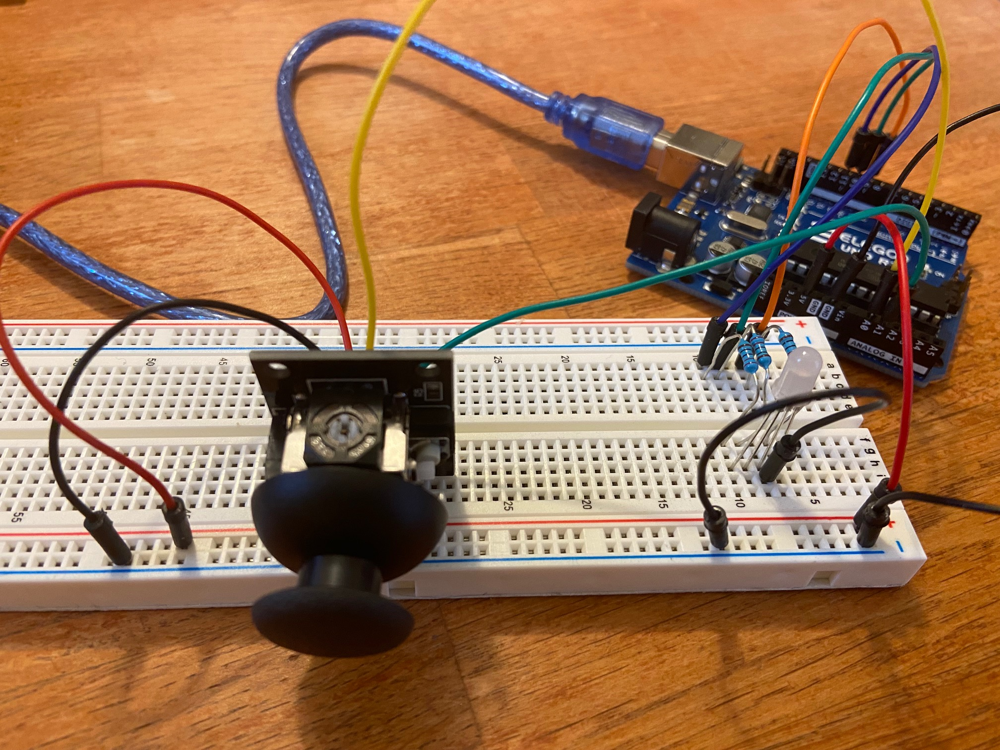
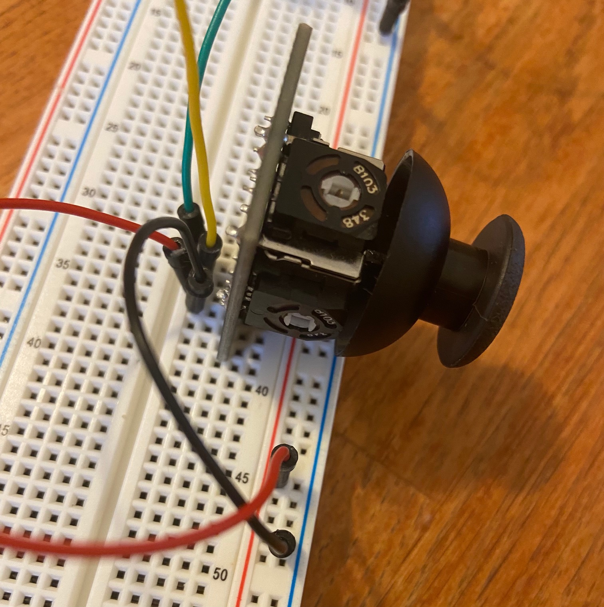
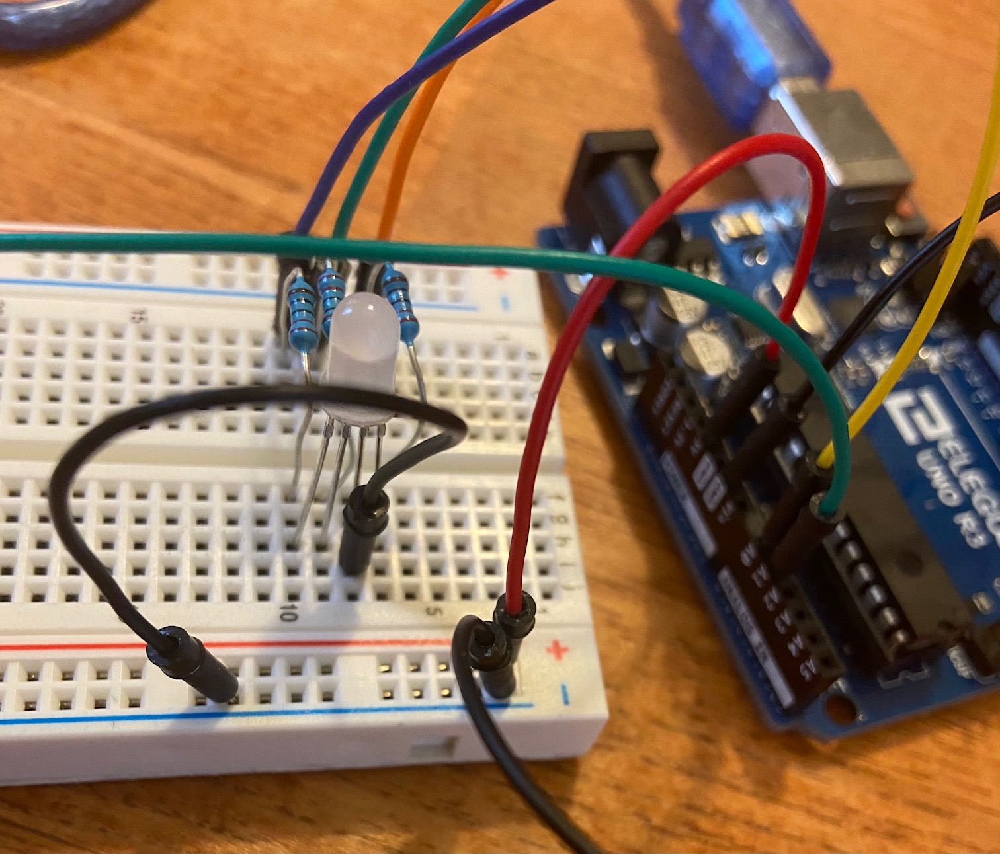
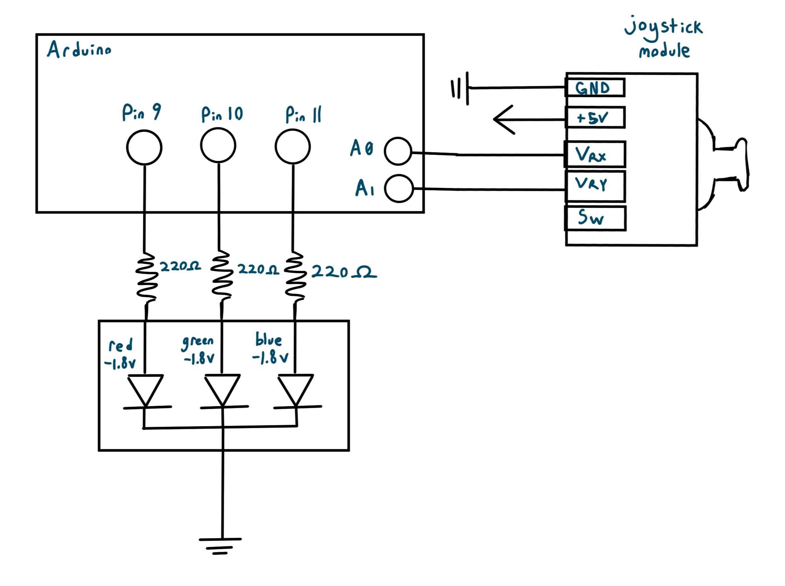
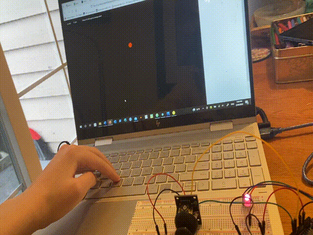
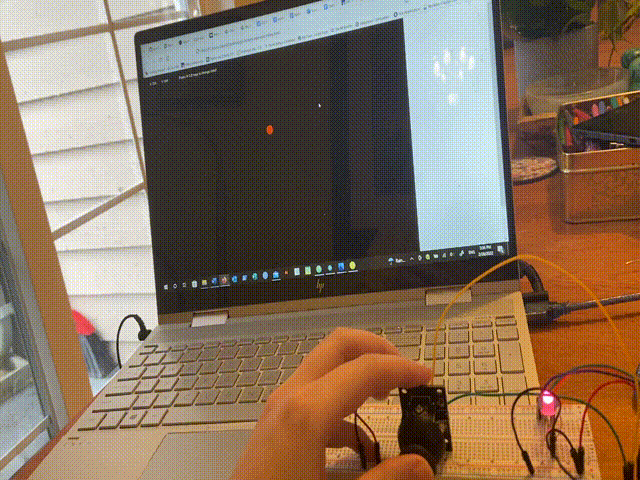

For this assignment, I connected a joystick and RGB LED to my javascript page. I had the joystick control the motion of a circle, and had keyboard inputs control the color of the circle and the LED.
  
For the joystick, I wired through power and ground, and connected Vrx and Vry to analog read pins A0 and A1 respectively.
The joystick is basically two potentiometers, and will return different voltage readings depending on its position along x and y.
For the RGB LED, I wired each color through analog pins 9-11, 220Ω resistors, and to ground. I chose 220Ω to ensure the RGB LED current was below the 20mA limit.
Red and green LEDs cause a 1.8V drop, and blue LEDs cause a 3.3V drop. I calculated the resistance to use based on Ohm's law (V = I*R).
(5 - 3.3)V = .02A * [x]Ω
1.7V / .02A = [x]Ω
x = 85
The calculated resistance is 160Ω for red and green and 85Ω for blue LEDs. I chose to use 220Ω, because it was the next highest value of the resistors I had, and a higher resistance would put the current a little bit lower than the limit.

A schematic of the circuit is shown above.
// this code draws from the lecture joystick example code
// integers for joystick (pins + x and y value integer)
int x = A0;
int y = A1;
int xval = 0;
int yval = 0;
// pin numbers for RGB led
int red = 9;
int green = 10;
int blue = 11;
String color = "red";
void setup() {
// start serial communication
Serial.begin(9600);
// set up RGB led pins
pinMode(red, OUTPUT);
pinMode(blue, OUTPUT);
pinMode(green, OUTPUT);
}
void loop() {
// get xval and yval readings from joystick
// map from analogread() values to the dimensions of the screen (800)
// x mapping reversed (map from pos 450 to 60) to correct flipped alignment
xval = map(analogRead(x), 0, 1023, 450, 60);
yval = map(analogRead(y), 0, 1023, 60, 1150);
//print out x and y input from joystick in json readable format
Serial.print("[");
Serial.print(xval);
Serial.print(",");
Serial.print(yval);
Serial.println("]");
// check if color is sent over serial (red, green, blue)
if (Serial.available() > 0) { // if there's serial data
color = Serial.readString(); // read it
}
// send RGB analog output to make red
if (color == "red"){
analogWrite(red, 100);
analogWrite(green, 5);
analogWrite(blue, 5);
}
// send RGB analog output to make green
else if (color == "green"){
analogWrite(red, 5);
analogWrite(green, 100);
analogWrite(blue, 5);
}
// send RGB analog output to make blue
else if (color == "blue"){
analogWrite(red, 5);
analogWrite(green, 5);
analogWrite(blue, 100);
}
delay(10);
}
var serial; // variable to hold an instance of the serialport library
var portName = 'COM3' //rename to the name of your port
var dataarray = []; //some data coming in over serial!
var c = 'red';
function setup() {
serial = new p5.SerialPort(); // make a new instance of the serialport library
serial.on('list', printList); // set a callback function for the serialport list event
serial.on('connected', serverConnected); // callback for connecting to the server
serial.on('open', portOpen); // callback for the port opening
serial.on('data', serialEvent); // callback for when new data arrives
serial.on('error', serialError); // callback for errors
serial.on('close', portClose); // callback for the port closing
serial.list(); // list the serial ports
serial.open(portName); // open a serial port
createCanvas(1200, 800);
background(0x08, 0x16, 0x40);
}
// get the list of ports:
function printList(portList) {
// portList is an array of serial port names
for (var i = 0; i < portList.length; i++) {
// Display the list the console:
print(i + " " + portList[i]);
}
}
function serverConnected() {
print('connected to server.');
}
function portOpen() {
print('the serial port opened.')
}
function serialError(err) {
print('Something went wrong with the serial port. ' + err);
}
function portClose() {
print('The serial port closed.');
}
function serialEvent() {
if (serial.available()) {
var datastring = serial.readLine(); // readin some serial
var newarray;
try {
newarray = JSON.parse(datastring); // can we parse the serial
} catch(err) {
//console.log(err);
}
if (typeof(newarray) == 'object') {
dataarray = newarray;
}
console.log("got back " + datastring);
}
}
// function to check if r g b are typed to change color
function keyTyped() {
// test for r, red
if (key === 'r') {
c = 'red';
} else if (key === 'g') { // test for g, green
c = 'green';
} else if (key === 'b') { // test for b, blue
c = 'blue';
}
// send the updated color to serial monitor
serial.write(c);
}
function draw() {
// black background + white text
background(0);
fill(255);
// print out x and y from joystick and serial, and instructions to change color
text("X: " + dataarray[0], 30, 30);
text("Y: " + dataarray[1], 90, 30);
text("Press R G B keys to change color!", 180, 30);
// set circle color with color name
fill(color(c));
// draw a circle at position from serial joystick data
// x and y orientation reversed on joystick, reversed here to correspond correctly
ellipse(dataarray[1], dataarray[0], 30);
}
The function of the circuit and code is shown in the following GIFs. They show the joystick controlling the circle position, and keyboard input controlling the color of the circle and LED.
 